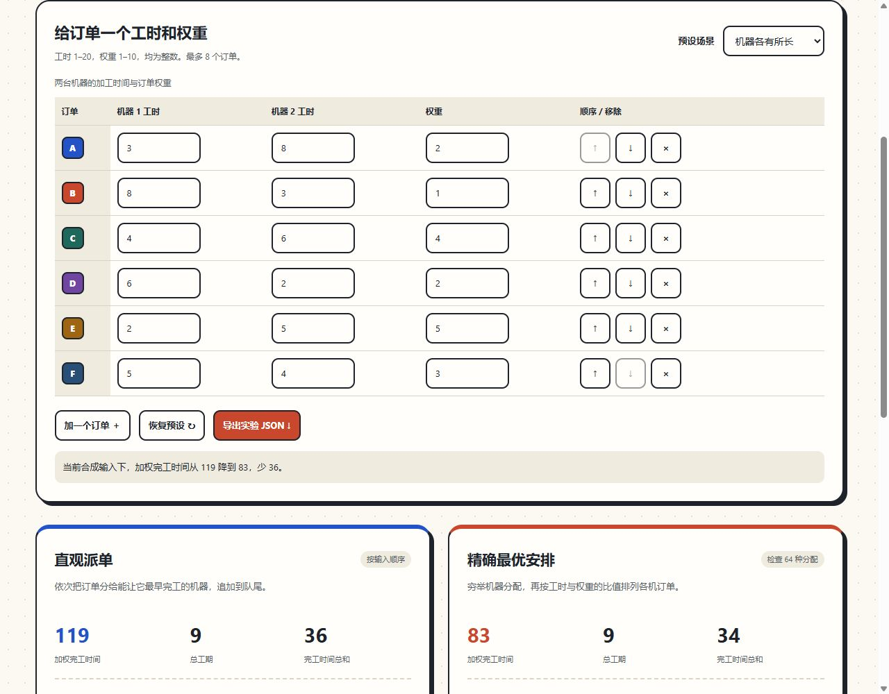

同一批订单，在两台机器上加工。每个订单都想尽早完成，但它们的重要程度不同。先做最短的，先做最重要的，还是先给最空闲的机器？
双机调度实验室让这些选择可以直接比较：编辑每个订单的工时和权重，观察分配、顺序和目标值怎样变化。

先问“早完成”是什么意思
这里的订单全部在时刻0可用。一个订单的完工时间C，包含它开始前的等待和自己的加工时间。权重w表示它晚完成一个时间单位的代价。目标是：
min Σ wᵢ × Cᵢ
Cᵢ：订单 i 的完工时间
wᵢ：订单 i 的优先权重加权完工时间和总工期是两个指标。前者关心每个订单何时完成、权重多大；后者只看最后一个订单结束的时刻。一个方案可能降低前者，却让后者增加。
直观派单漏掉了什么？
基线按输入顺序读订单，将当前订单追加到能让它最早完工的机器。它知道机器的已有负荷和本单工时，却不使用权重来决定先后，也不看后续订单。
默认例子中，这样得到机器1的A→C→E、机器2的B→D→F。高权重的E在队尾，较低权重的B在队首。重新安排后，机器1变成E→C→A，机器2变成D→F→B。
| 方案 | ΣwC | 总工期 | 完工时间总和 |
|---|---|---|---|
| 直观派单 | 119 | 9 | 36 |
| 精确最优 | 83 | 9 | 34 |
再把F的权重从3改成10，优化方案会让它先在机器2加工，并在时刻4完成。这个变化不是“所有人都更快”，而是当前目标更重视了F的等待。
为什么是工时除以权重？
先固定哪些订单交给一台机器。比较相邻订单i、j的两种顺序，设它们从同一时刻开始，后续订单的完成时刻不会因交换这两单而改变。
i → j 的代价 − j → i 的代价
= wⱼ × pᵢ − wᵢ × pⱼ当pᵢ/wᵢ ≤ pⱼ/wⱼ，把i放前面不会更差。这就是这个模型里的Smith排序规则。它兼顾工时和权重：权重大但工时很长的订单，不一定应该永远最先做。
两台机器的工时可能不同，所以还要决定分给哪台。最多8单时，分配只有2⁸=256种；逐一分配，在每台机器内部使用这个最优顺序，取目标最小值，得到限定模型的全局最优。
如何确认这个“最优”？
生产算法与独立测试基准走不同路线。基准直接枚举订单全排列和两台机器的分割点，覆盖全部机器顺序，不使用Smith规则。
3组预设和60组固定种子随机输入的最优目标一致；输出还检查每个订单恰好一次、同机不重叠、开始/完工时间相接，以及所有指标重新求和。8组检查同时包含极值、非法输入和JSON复现。
还有一个反例专门保留在测试中：基线加权完工时间89、总工期7；优化后分别为78和9。降低加权完工时间，并不保证更早全部结束。
你可以动手做的三个变化
- 把F的权重改成10，观察它的机器与完工时间。
- 调整输入顺序，看看基线有没有变化；精确最优目标应保持一致。
- 把所有工时和权重改成一样，观察多种安排怎样达到相同目标。
页面支持导出完整订单与结果。用仓库的node scripts/solve.mjs scheduling-experiment.json重新计算，可以保留一次实验的输入和结论。
哪些条件一变，就要重新建模？
所有订单同时可用，没有准备时间、切换耗时、设备故障、订单依赖和中断加工。加入交期、不同到达时间或顺序相关的准备时间后，这个排序证明和算法不一定适用。
本例使用新造合成数据，选题来自工程优化的调度问题结构；不公开课程原题或答案，也不承接已有课程结果。开发、文档与检查由AI辅助，自动检查不等同本人独立开发或真人实验。